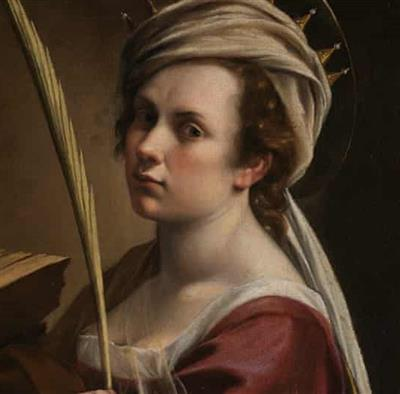

.jpeg)
RENACIMIENTO · ITALIA
Miguel Ángel
✧
Escultor, pintor y arquitecto italiano, reconocido por su extraordinario dominio de la anatomía humana y sus monumentales creaciones artísticas.
EL TALENTO DETRÁS DEL ARTE
Conocé a quienes transformaron su visión del mundo en obras extraordinarias.
A lo largo de la historia, diferentes artistas encontraron en el arte una forma de expresar sus pensamientos, emociones y perspectivas. Descubrí algunas de las figuras que dejaron una huella en el mundo artístico.
RENACIMIENTO · ITALIA
Escultor, pintor y arquitecto italiano, reconocido por su extraordinario dominio de la anatomía humana y sus monumentales creaciones artísticas.
.jpeg)
IMPRESIONISMO · FRANCIA
Pintor francés y una de las figuras fundamentales del impresionismo. Sus obras exploraron la luz, el color y los cambios de la naturaleza.

BARROCO · ITALIA
Pintora barroca italiana, destacada por sus composiciones dramáticas, el uso expresivo de la luz y la fuerza narrativa de sus pinturas.
ART GALLERY DREAMS